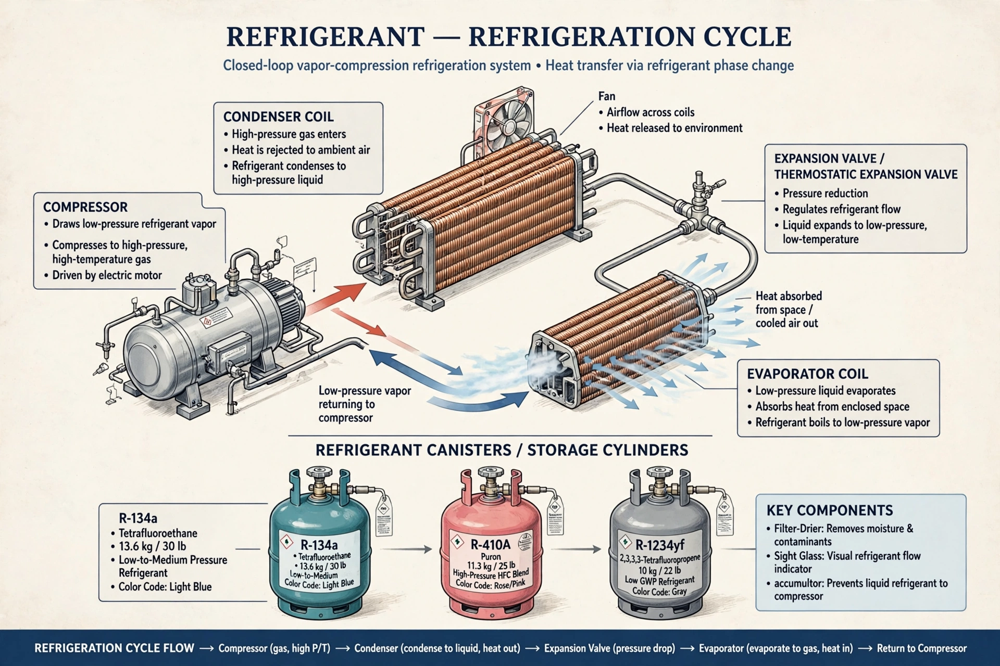

A refrigerant is a working fluid used in the refrigeration cycle of air conditioners and heat pumps, where it undergoes phase transitions from liquid to gas and back again, absorbing and releasing heat. Refrigerants are classified under the ASHRAE R-number system.
Early refrigerants included ammonia, sulfur dioxide and methyl chloride — effective but toxic or flammable. Chlorofluorocarbons (CFCs) such as R-12 were introduced in the 1930s as safe alternatives, but were phased out under the Montreal Protocol (1987) because they deplete the ozone layer. Hydrochlorofluorocarbons (HCFCs) served as transitional substitutes, followed by hydrofluorocarbons (HFCs) such as R-134a and R-410A, which have zero ozone-depletion potential but high global-warming potential.
The Kigali Amendment (2016) phases down HFCs. Newer options include hydrofluoroolefins (HFOs) such as R-1234yf, and 'natural' refrigerants — ammonia (R-717), carbon dioxide (R-744) and hydrocarbons such as propane (R-290) — which have very low climate impact but require attention to toxicity or flammability.
Desirable properties include suitable boiling point, high latent heat, chemical stability, low toxicity, and low ozone-depletion and global-warming potentials.